CS184/284A Spring 2025 Homework 2 Write-Up
Names:
Link to webpage: (TODO) cs184.eecs.berkeley.edu/sp25
Link to GitHub repository: (TODO) cs184.eecs.berkeley.edu/sp25

Overview
In this assignment, I implemented methods for manipulating half-edge data structures and for displaying them with a smoother appearance. I learned how important it is to be meticulous with these data structures and the benefit of careful planning before implementation.Section I: Bezier Curves and Surfaces
Part 1: Bezier curves with 1D de Casteljau subdivision
De Casteljau's is a method of using repeated linear interpolations between a set of points to create a smoother curve. The value of the parameter used in the algorithm determines where along the linear interpolation the sample should be taken. I implemented it by iterating through each point in the provided set and taking the linear interpolation of p[i] and p[i+1] to create a new set of points.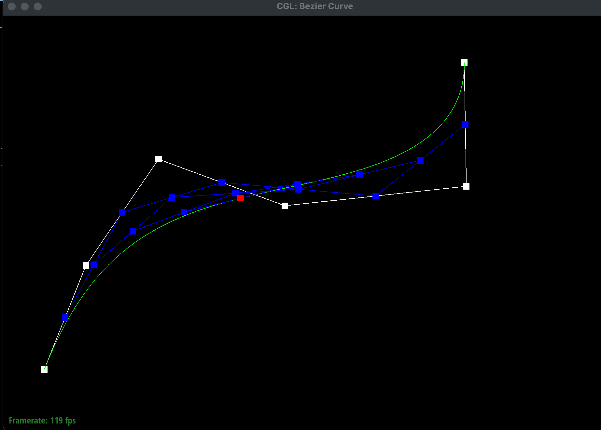
|
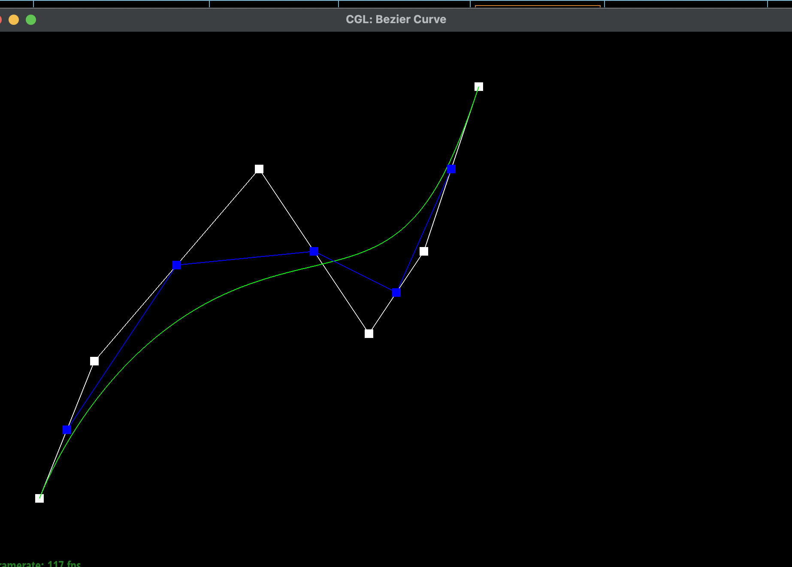 |
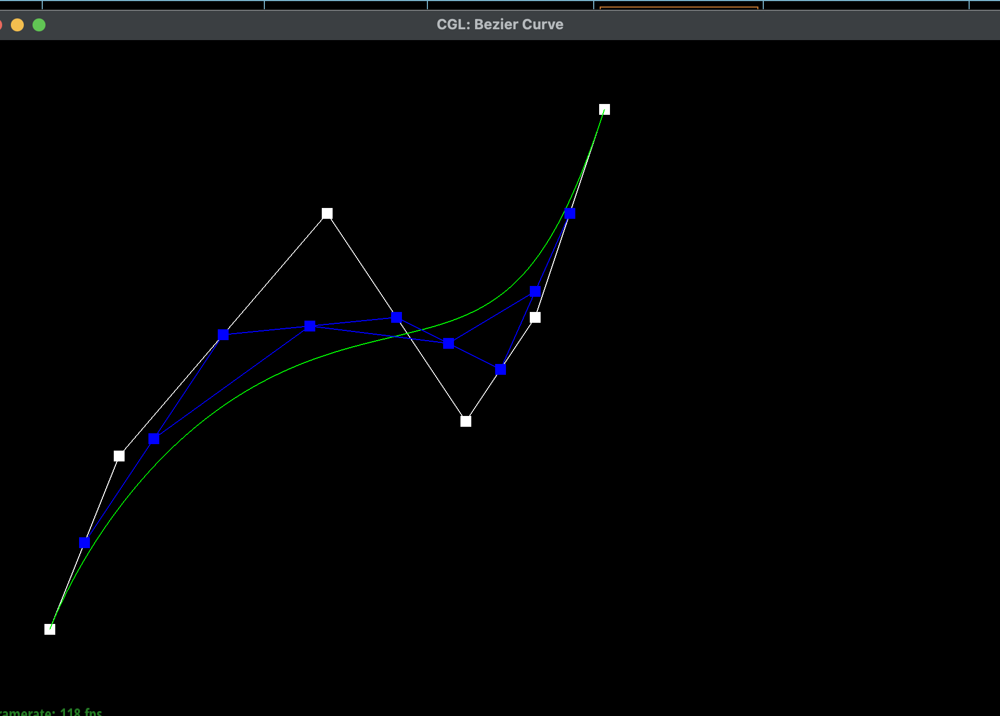 |
|
|
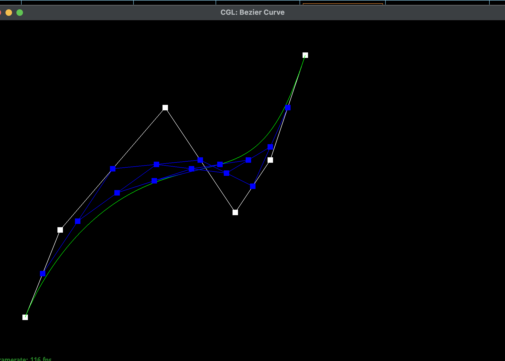 |
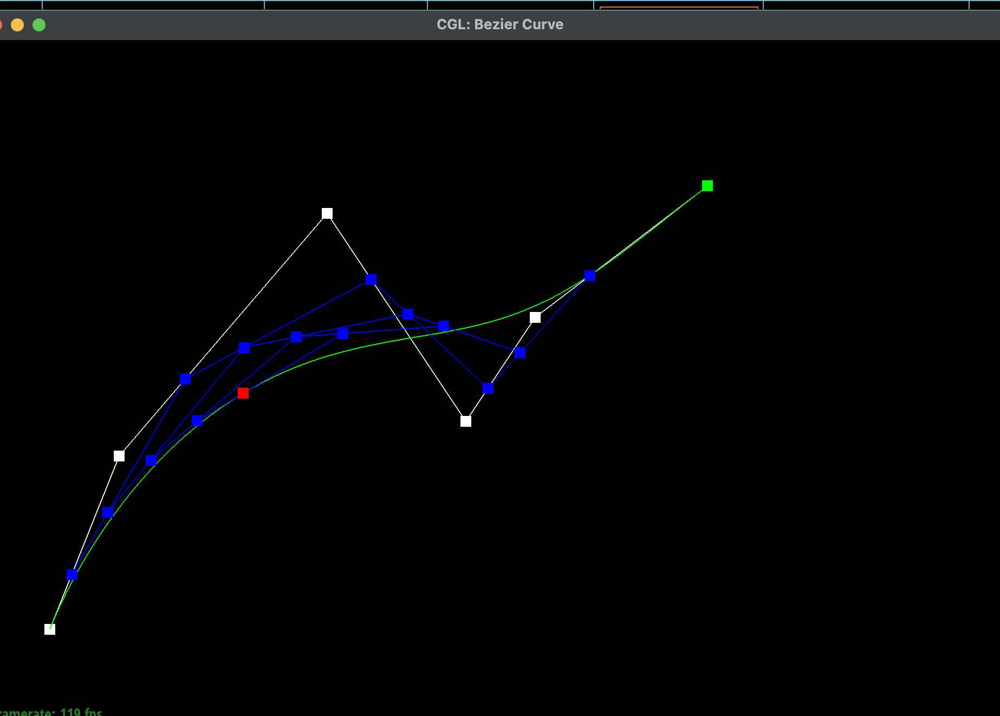 |
Part 2: Bezier surfaces with separable 1D de Casteljau
De Casteljau's algorithm extends to Bezier surfaces by being applied in 2 directions. First, a Bezier curve is made from every column in the surface matrix. From there, each curve is evaluated at a point using the first parameter. From these new points, another bezier curve is made and is evaluated to find the final point with the second parameter.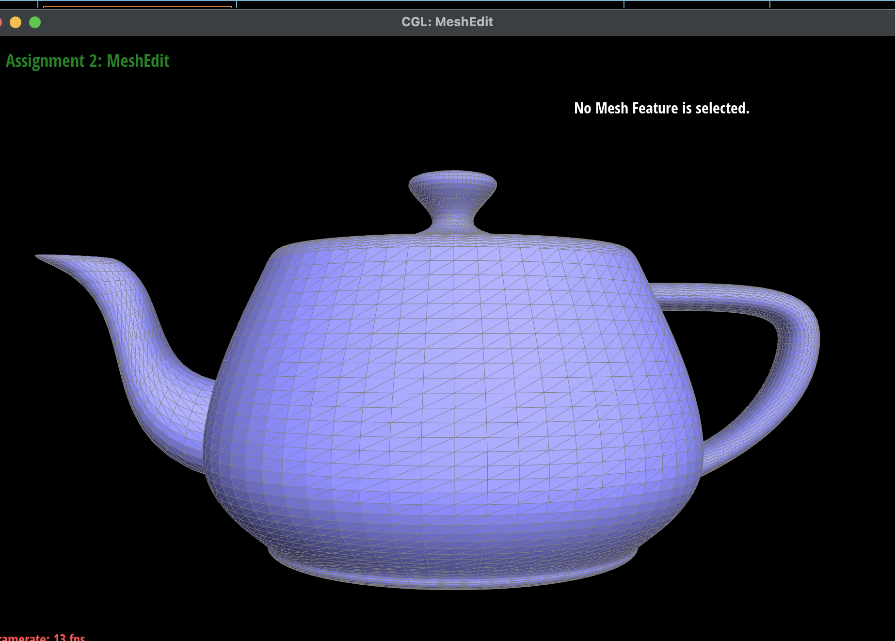
Section II: Triangle Meshes and Half-Edge Data Structure
Part 3: Area-weighted vertex normals
I implemented area-weighted vertex normals by iterating through each face touching the vertex and taking the cross product of the vectors made by these points. I then returned the average of each of these normals. I iterated through all of the faces by going to the halfedge's next()->next()->twin(), which would be the halfedge of the next triangle over from the starting one.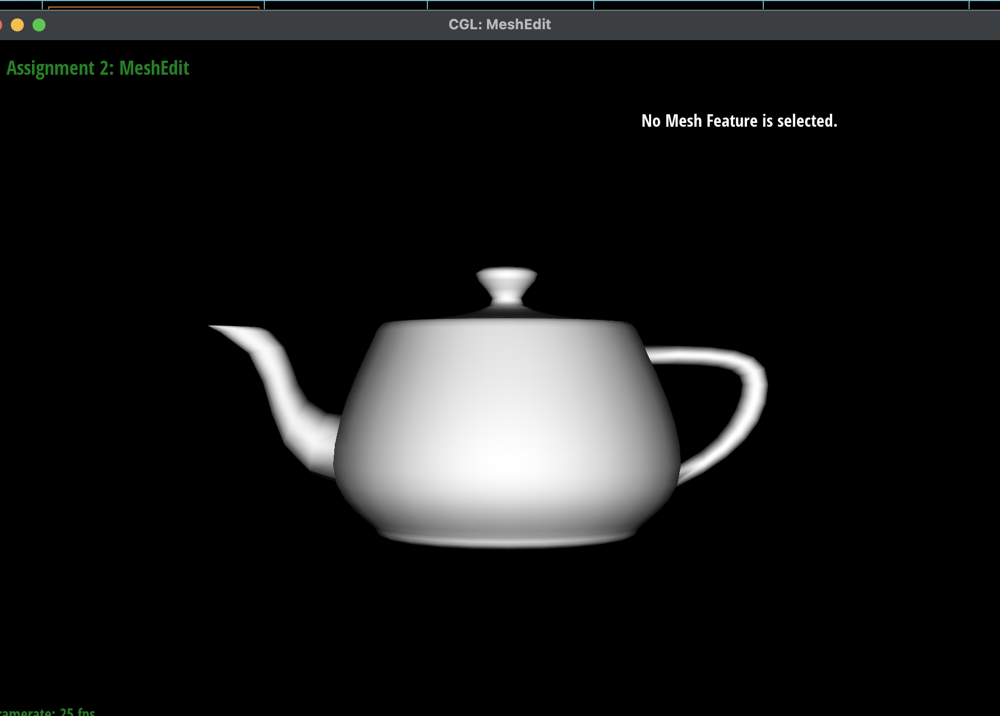
Part 4: Edge flip
I implemented the edge flip operation by first checking if the edge was a boundary, and exiting if so. I then collected all of the related halfedges, edges, and vertices. Next, I reassigned all of the neighbors for each halfedge. Using the diagram in the assignment spec, I changed the halfedge from b->c to a->d and changed the halfedge from c->b to d->a. The face associated with halfedge b->c became the face for a, c, and d. The face associated with halfedge c->b became the face for a, b, and d. Finally, I made sure that all of the vertices and faces were pointing to the newly assigned halfedges. The main trick that I used was to draw every vertex, face, and edge with labels that I then used as variable names in the implementation.|
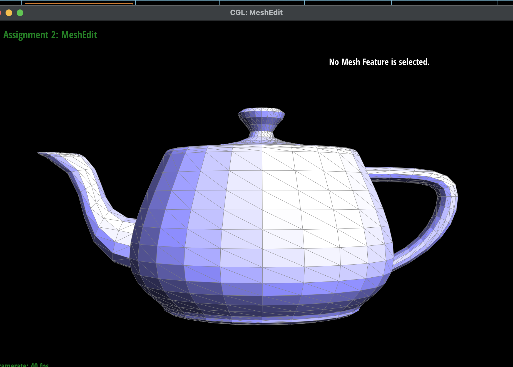 |
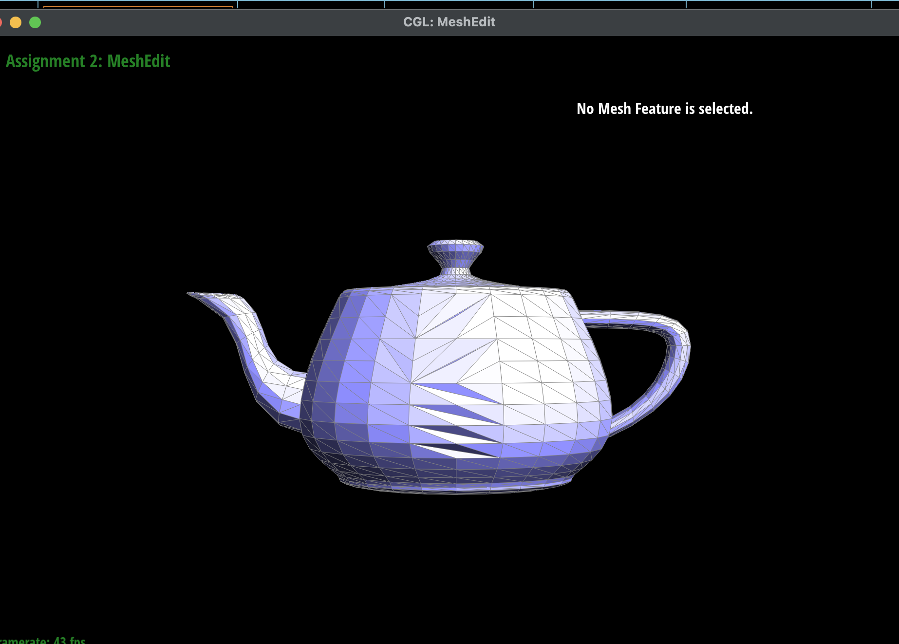 |
Part 5: Edge split
I implemented the edge split by first collecting all of the existing halfedges, vertices, and faces. I then started by making the new vertex m, which had the averaged position of b and c. Next, I made 6 new halfedges, 3 new edges, and 2 new faces. Then, I assign all halfedges to their related neighbors. I opted for the original edge to be associated with m->b and b->m. All assignments were made according to the diagram below. Finally, I assigned all vertices, faces, and edges to their corresponding halfedges.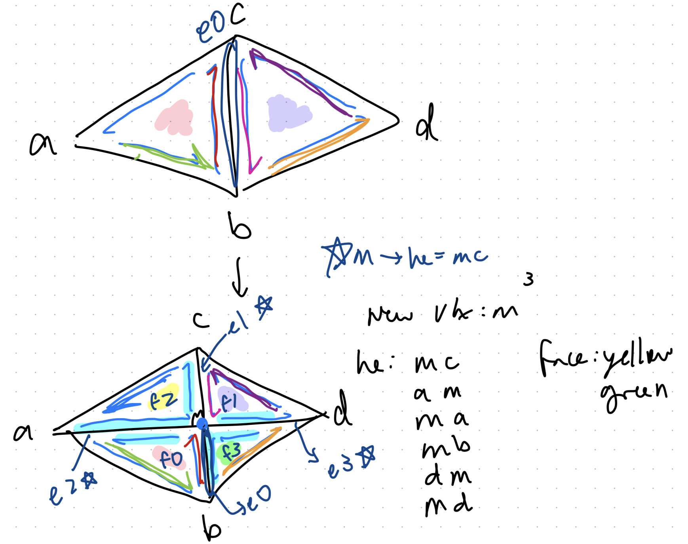
|
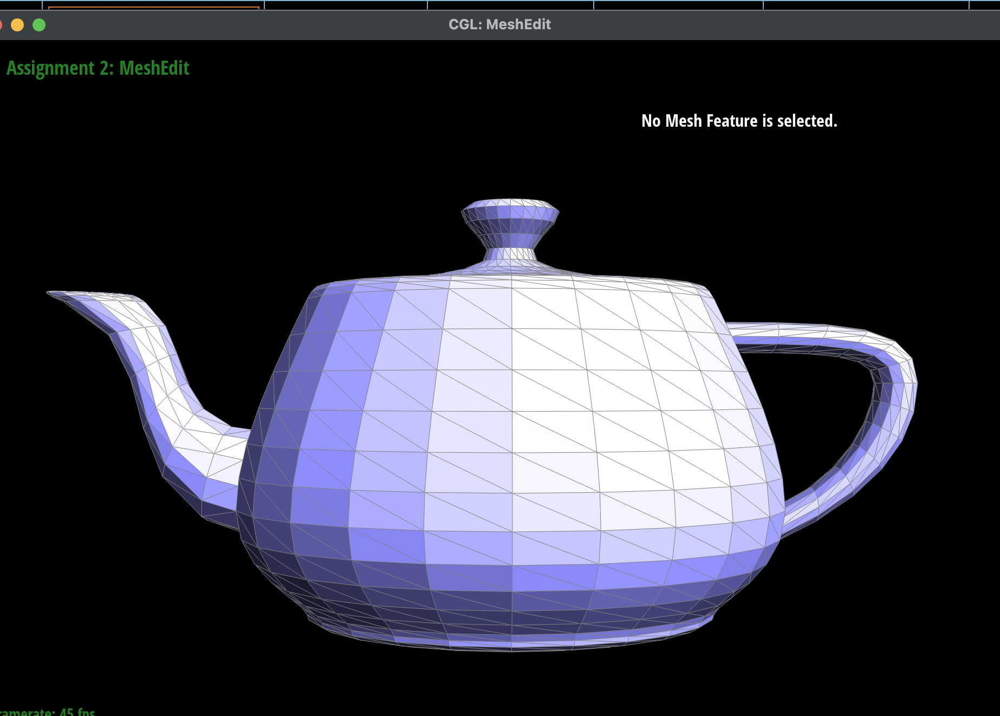 |
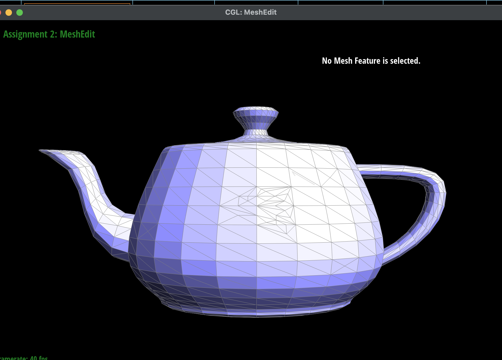 |
|
|
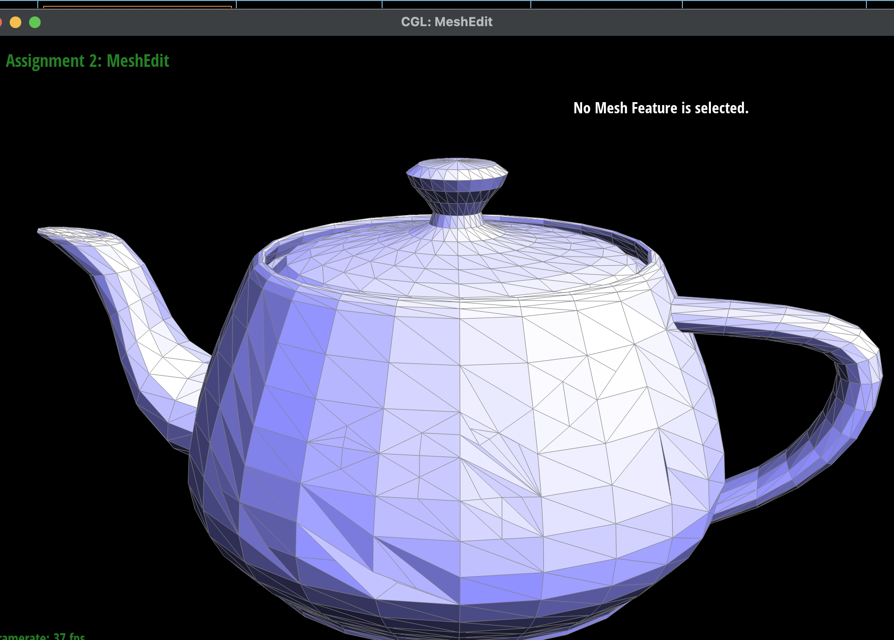 |